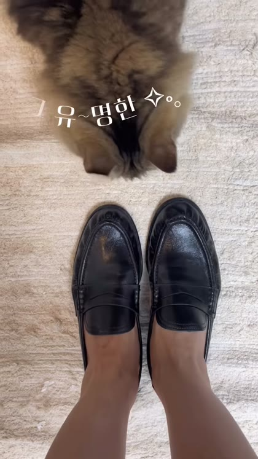
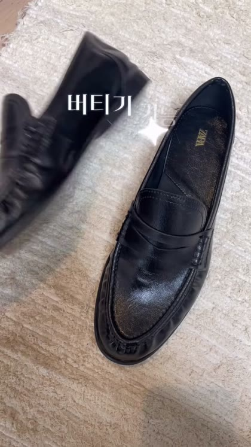
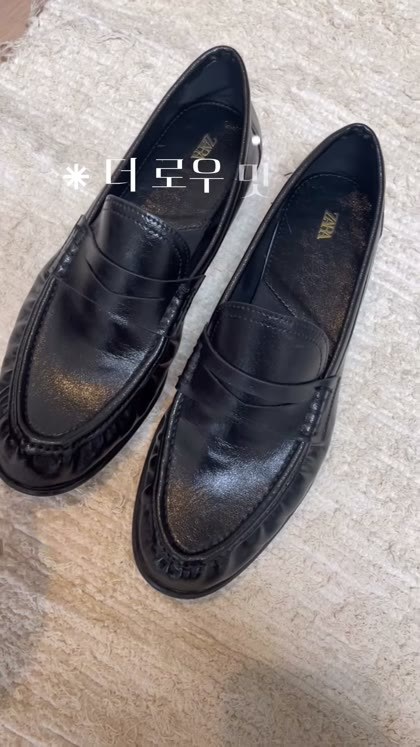
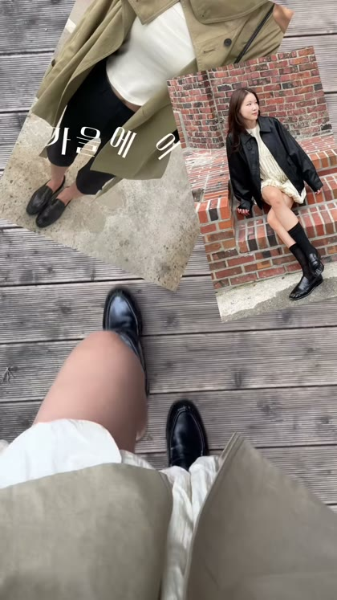

말리님 착한구두 공구 릴 (원본)
- 훅플랫레이 + 타이틀 자막 → 박스
- 중간제품마다 박스 → 손(자막 한 줄씩) → 발 POV·전신·탑다운
- 마지막"가성비 어그 완전 추천" + 댓글 키워드 DM
CHAAKAN × MOLIE · SHOOTING GUIDE
착한구두 촬영 가이드 — 말리님 예시판
2026년 1월 시즌오프 릴에서 착한구두 2종이 들어간 구간이에요. 제품 하나당 박스 → 손 → 발, 14초 안팎. 이 골격을 이번 영상의 뼈대로 그대로 써요.
자막은 컷마다 한 줄, 카메라는 같은 자리. 발 컷이 4연속 6.5초로 제일 길어요.
손에 든 채로 안감 털 → 밑창을 보여주고 발로 넘어가요. 마지막은 "추천" 한 줄.
매장 릴 25편을 초 단위로 뜯었어요. 16편 중 15편이 첫 프레임(0~1초)에 자막이 떠 있었고, 시작 방식은 아래 셋 중 하나였어요. 말리님 릴도 첫 프레임 자막이었어요.
25편 중 48%가 이걸로 시작. 옷·신발 여러 개를 0.5~1초씩 갈아 끼우며 보여줘요.
간판은 0.6~2.3초만. 바로 진열대·신발로.
뒤에 나올 컷을 0.3~0.5초씩 미리 흘려요. 훅에 넣은 컷은 본편에 꼭 다시 나와야 해요.
매장에서 찍으면 간판·외관은 1~2초만 잡고 바로 안으로. 집에서 찍으면 말리님 방식대로 박스 오픈 1초 → 손으로 넘어가요.
여기가 승부처예요. 전신컷은 발끝까지, 신발 안 보이는 앵글은 0초. 말리님 릴의 발 POV → 하이앵글 → 앉은 전신 → 탑다운 4연속이 정확히 이거예요.
신발 단독 블록을 영상 끝에 5~6초 몰아서 넣고, 가격·굽 수치 자막으로 닫아요. 말리님 부츠 구간의 밑창·안감 컷이 여기 들어가요.




조회수가 낮은 영상은 이렇게 했어요. 이것만 피하세요.
잘 안된 영상 조회수는 참고용이에요. 원인이 하나라는 뜻은 아니에요.
7개 중 0개 체크했어요.
누르면 소리와 함께 처음부터 재생돼요. 첫 번째가 말리님 원본이에요.